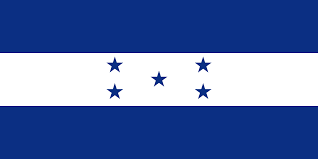
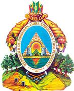
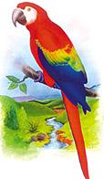

Símbolos Patrios

La bandera de Honduras cuenta con tres franjas horizontales dos de
ellas son azules y una blanca. Las azules simbolizan el cielo. El
blanco la paz. Las cinco estrellas, el ideal de Morazán, por una
sola patria en la región , representa también los miembros de la
antigua República Federal de América Central: Costa Rica, El
Salvador, Guatemala, Honduras y Nicaragua.

Por iniciativa de don Dionisio de Herrera en su cargo como Jefe de
Estado de Honduras, decretó la creación de un Escudo Nacional, el
3 de octubre de 1825. El representa de su historia y la variedad
de los recursos naturales que poseen y los cuales deben proteger y
conservar. El soberano Congreso Nacional en el decreto No. 216 y
en el artículo 142 considera al Escudo como Símbolo Nacional para
todos los usos, de modo claro y general.

La Guacamaya o Guara Roja ha sido seleccionada como símbolo de su
Fauna Nacional, según decreto ejecutivo Nº 36-93 emitido el 28 de
junio de 1993 por el soberano Congreso Nacional. La Guacamaya
pertenece a la familia de las psitácidas y su nombre científico
es: (Ara macao), su alimentación consiste en: néctar, raíces,
frutas, nueces y cereales; habita desde México hasta Bolivia.La
Guacamaya tiene todas las características de un loro común, con la
singularidad de poseer en su plumaje colores muy vivaces como ser
el amarillo, el rojo y el azul; tiene una cola muy larga y
atractiva; su habitat natural son zonas muy selváticas y en
nuestro territorio generalmente habita en la Mosquitia, la
longevidad de éstas aves es de aproximadamente 30 años, no hacen
nidos pero sí ocupan huecos en los árboles muy altos; ponen de dos
a tres huevos cada 28 días y forman parejas muy unidas de por
vida.
Historia
El territorio que corresponde a la actual Honduras fue hogar de la
civilización maya durante el primer milenio de nuestra era, como lo
testimonian las ruinas de Copán. Fue invadido después por los
Aztecas y a continuación por los Mosquitos. En 1502, la región fue
descubierta por Cristóbal Colón. La población indígena fue entonces
diezmada por la conquista española y por las enfermedades que
trajeron los colonos. Sin embargo, muy pronto los pueblos se
mezclaron y los mestizos llegaron a ser el grupo étnico dominante de
Honduras.
En 1523, Hernán Cortés, en el curso de una expedición punitiva
contra soldados rebeldes, comenzó la conquista del territorio. El
descubrimiento de oro en el país fue, sin embargo, el origen de
intrigas y conflictos durante varios años. Fue el lugarteniente de
Cortés en Guatemala, Pedro de Alvarado, quien venció finalmente a
todos sus rivales, en 1539.
En 1540, los españoles hicieron de Comayagua la capital de su
colonia. Otras comunidades españolas se instalaron en los valles de
Honduras donde permanecieron muy aisladas.
Al final del período colonial, la mayor parte de Honduras era una
provincia poco poblada, unida a la capitanería general de Guatemala,
bajo administración española, y donde la mayoría de los habitantes
se dedicaban a la agricultura o a la ganadería para subsistencia. El
país, después de haber provisto esencialmente metales, procuró
grandes cantidades de productos alimentarios y ganado a las regiones
exportadoras de índigo de El Salvador y Guatemala.
Extensión Territorial
La República de Honduras tiene una extensión territorial de 112,492
km². Su población aproximada es de más 9 millones de habitantes y su
actual División Política consta de 18 departamentos,298 municipios,
3,731 aldeas y 30,591 caseríos.